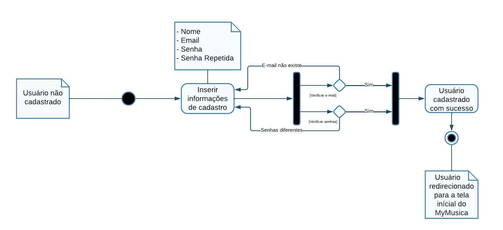
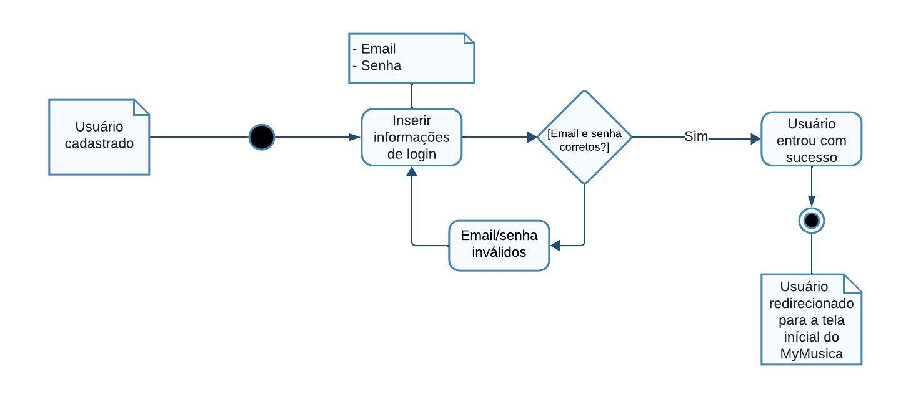
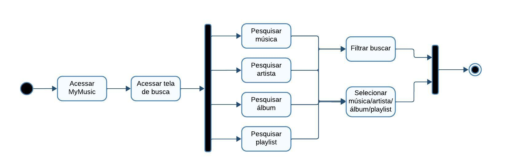
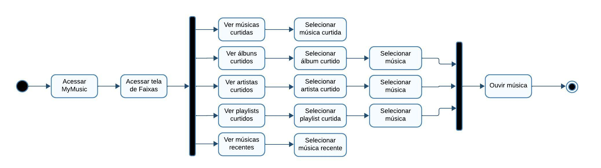
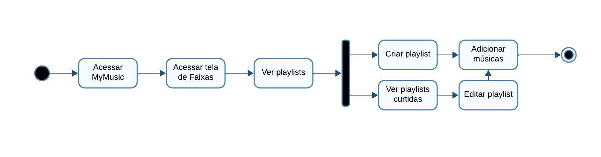

Diagrama de Atividades
Introdução
O Diagrama de Atividades, é um diagrama dinâmico que dentro da linguagem de modelagem UML, dá um destaque valioso para representar o encadeamento e a lógica das atividades em um sistema. Ele oferece uma perspectiva visual do fluxo de controle e do movimento de objetos, enfatizando a sequência e as condições que regem esse fluxo.
Este diagrama é amplamente utilizado em engenharia de software e em outras áreas para modelar processos, sistemas e comportamentos complexos, fornecendo uma representação visual clara e compreensível do fluxo de atividades em um sistema.
Metodologia
Para realizar a modelagem do Diagrama de Atividades, a equipe utilizou a ferramenta LucidChart, que é um site de modelagem de diagramas, que permite ao seus clientes utilizarem a linguagem UML e oferece um serviço de compartilhamento ao vivo com outros usuários.
Diagramas de Atividades
Logo abaixo você encontra as figuras que representam atividades do aplicativo My Music em diagramas de atividades.
Diagrama de Cadastro
A figura 1 a seguir representa a modelagem da atividade de cadastro no aplicativo My Music.
Figura 1 - Diagrama de cadastro

Fonte: Vinícius Mendes, 2024.
Diagrama de Login
A figura 2 a seguir representa a modelagem da atividade de login no aplicativo My Music.
Figura 2 - Diagrama de login

Fonte: Vinícius Mendes, 2024.
Diagrama de Busca
A figura 3 a seguir representa a modelagem da atividade de buscar música/artista/álbum/playlist, utilizando ou não filtro.
Figura 3 - Diagrama de busca

Fonte: Vinícius Mendes, 2024.
Diagrama de Ouvir Música
A figura 4 a seguir representa a modelagem da atividade de ouvir música, seja acessando-a diretamente, ou indiretamente através de artista/álbum/playlist ou nas músicas recentes do usuário.
Figura 4 - Diagrama de ouvir música

Fonte: Vinícius Mendes, 2024.
Diagrama de Criar Playlist
A figura 5 a seguir representa a modelagem da atividade de criar playlist.
Figura 5 - Diagrama de criar playlist

Fonte: Vinícius Mendes, 2024.
Bibliografia
The Unified Modeling Languag Org. Activity Diagrams, 2011. Disponível em: https://www.uml-diagrams.org/activity-diagrams.html. Acesso em: 12 de Abril.
Histórico de versões
| Versão | Data | Descrição | Autor(es) | Revisor(es) |
|---|---|---|---|---|
| 1.0 | 12/04/2024 | Criação do documento Diagrama de Atividades | Vinícius Mendes |